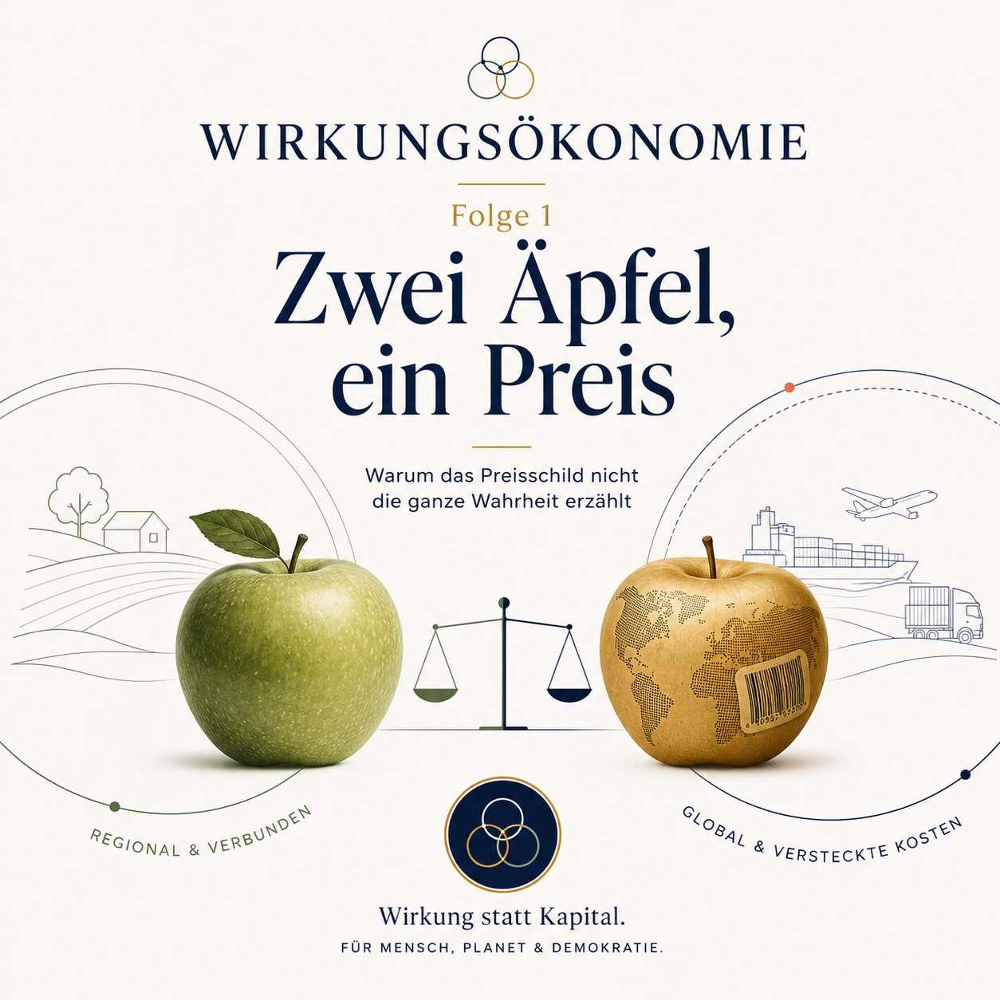

Podcast · Folge 1 · 17. Juni 2026 · 35-45 Min.
Zwei Äpfel, ein Preis
Warum das Preisschild nicht die ganze Wahrheit erzählt

 Wirkungsökonomie
Wirkungsökonomie
Podcast · Folge 1 · 17. Juni 2026 · 35-45 Min.
Warum das Preisschild nicht die ganze Wahrheit erzählt

Anhören
In der ersten Folge beginnt die Reise zur Wirkungsökonomie nicht mit einer Formel, sondern mit einem Apfel. Zwei Äpfel können an der Kasse ähnlich viel kosten und trotzdem völlig unterschiedliche Wirkungen haben - auf Wasser, Boden, Arbeit, Klima, Gesundheit, Region und Zukunft.
Verknüpfungen
Transkript
Das Transkript macht die Folge auch als Text zugänglich und verknüpft zentrale Begriffe mit dem Glossar.
Stell dir vor, du stehst im Supermarkt. Vor dir liegt eine Kiste mit Äpfeln.
Links liegen rote Äpfel aus der Region. Rechts liegen rote Äpfel, die eine lange Reise hinter sich haben. Vielleicht aus Südamerika. Vielleicht aus einer Gegend, in der Wasser knapp ist. Vielleicht aus einem Betrieb, den du nicht kennst.
Beide Äpfel sind rund. Beide glänzen. Beide riechen nach Apfel. Und an der Kasse kosten sie fast gleich viel.
Jetzt kommt die einfache Frage, mit der diese ganze Podcast-Reihe beginnt:
Sind diese beiden Äpfel wirklich gleich teuer?
An der Kasse können zwei Äpfel gleich teuer wirken. In Wirklichkeit können sie sehr unterschiedlich teuer sein. Für den Boden. Für das Wasser. Für die Menschen, die sie gepflückt haben. Für das Klima. Für die Region. Für die Zukunft. Das Preisschild sagt uns, was wir bezahlen. Aber nicht, wer sonst noch bezahlt.
Und genau da beginnt die Wirkungsökonomie.
Hallo und herzlich willkommen zu "Der neue Kompass - Wirkungsökonomie einfach erklärt".
Mein Name ist Natalie Weber, und in dieser Reihe möchte ich mit euch eine große Frage Schritt für Schritt auseinandernehmen: Wie müsste eine Wirtschaft aussehen, die nicht nur fragt, wie viel Geld bewegt wird, sondern was dieses Geld bewirkt?
Wir werden über Preise sprechen. Über Steuern. Über Arbeit. Über Pflege. Über Kapital. Über Unternehmen. Über Demokratie. Über Medien. Über Krisen. Und am Ende über eine Gesellschaft, die nicht beim ersten Sturm umfällt, sondern aus Krisen lernt und stabiler wird.
Aber wir fangen nicht mit einem Gesetz an. Nicht mit einer Formel. Nicht mit einem Fachbegriff.
Wir fangen mit einem Apfel an.
Denn eine gute Erklärung beginnt nicht da, wo es kompliziert ist. Sie beginnt da, wo wir alle schon einmal waren. Im Supermarkt. Vor einem Regal. Mit einer kleinen Entscheidung in der Hand.
Und genau dort merken wir: Ein Preis ist viel weniger ehrlich, als er aussieht.
Ein Preisschild ist ein erstaunliches Ding. Es ist klein, meistens weiß oder gelb, manchmal klebt ein rotes Sonderangebot drauf. Und trotzdem entscheidet es jeden Tag mit darüber, was wir kaufen, was Unternehmen herstellen und wohin Kapital fließt.
Wenn auf dem Schild steht: 49 Cent, dann glauben wir: Das ist der Preis dieses Apfels.
Aber eigentlich steht dort nur: Das ist der Betrag, den du heute an der Kasse zahlst.
Das ist nicht dasselbe.
Im Preis stecken einige Dinge, die man gut zählen kann: Pacht, Saatgut, Maschinen, Löhne, Verpackung, Lagerung, Transport, Handelsspanne, Steuern. Das sind Kosten, die irgendwo auf einer Rechnung auftauchen.
Aber viele andere Dinge tauchen dort nicht auf. Zum Beispiel: Wurde der Boden durch den Anbau besser oder schlechter? Wurde Wasser aus einer Region entnommen, die ohnehin schon unter Trockenheit leidet? Wurden Menschen fair bezahlt? Gab es Pestizidrückstände? Musste der Apfel lange gekühlt werden? Wie viel CO2 entstand durch Transport und Lagerung? Hat der Anbau die Artenvielfalt gestärkt oder geschwächt?
All das ist nicht unsichtbar, weil es unwichtig wäre. Es ist unsichtbar, weil unser Preissystem es bisher nicht richtig mitrechnet.
Der Preis sagt, was wir zahlen. Wirkung sagt, was wir auslösen.
Jetzt könnte man denken: Aha, also ist der regionale Apfel immer gut und der importierte Apfel immer schlecht.
So einfach ist es nicht. Und es ist wichtig, dass wir genau hier sauber bleiben.
Die Wirkungsökonomie ist keine Romantikmaschine. Sie sagt nicht: Nähe ist automatisch gut und Ferne ist automatisch schlecht. Sie sagt auch nicht: Bio klingt gut, also ist alles gut. Und sie sagt schon gar nicht: Konsumentinnen und Konsumenten sollen jedes Produkt selbst moralisch durchleuchten.
Die Wirkungsökonomie fragt nüchterner:
Welche Wirkung entsteht durch dieses konkrete Produkt, in dieser konkreten Lieferkette, unter diesen konkreten Bedingungen?
Ein regionaler Apfel kann problematisch sein, wenn er monatelang mit hohem Energieeinsatz gekühlt wurde, wenn er mit viel Chemie angebaut wurde oder wenn Arbeitsbedingungen schlecht sind.
Ein importierter Apfel kann in manchen Fällen besser abschneiden, wenn Anbau, Wasser, Arbeit, Lagerung und Transport günstiger wirken als bei einer regionalen Alternative.
Der Punkt ist also nicht Herkunft als Bauchgefühl. Der Punkt ist geprüfte Wirkung.
Damit verschiebt sich die Frage. Wir fragen nicht mehr: Was fühlt sich richtig an? Wir fragen: Was verändert sich tatsächlich?
Damit sind wir beim wichtigsten Wort dieser ganzen Reihe: Wirkung.
Wirkung klingt erst einmal nach etwas Gutem. Man sagt ja oft: Das hat Wirkung. Oder: Das war wirkungsvoll. Aber in der Wirkungsökonomie ist Wirkung zuerst einmal neutral.
Wirkung bedeutet: Ein Zustand verändert sich.
Der Boden wird fruchtbarer - oder ärmer. Wasser bleibt sauber - oder wird belastet. Menschen werden fair bezahlt - oder ausgebeutet. Vertrauen wächst - oder zerfällt. Eine Demokratie wird stabiler - oder verletzlicher. Gesundheit verbessert sich - oder verschlechtert sich.
Das alles sind Zustandsveränderungen. Und genau das meint Wirkung.
Wirkung ist also nicht Absicht. Man kann etwas gut meinen und trotzdem Schaden verursachen. Wirkung ist auch nicht Image. Ein schönes Label sagt noch nicht, was wirklich passiert. Wirkung ist auch nicht Output. Viel zu produzieren heißt noch nicht, gut zu wirken.
Wirkung ist das, was am Ende tatsächlich anders ist.
Man kann sich das vorstellen wie bei einem Stein, den man ins Wasser wirft. Der Stein ist die Handlung. Der Platsch ist der direkte Effekt. Aber die Kreise, die sich im Wasser ausbreiten, sind die Wirkung. Und manchmal treffen diese Kreise auf andere Kreise. Dann entstehen neue Muster.
Genau so ist Wirtschaft. Jede Handlung erzeugt Kreise. Manche sehen wir sofort. Andere erst später. Manche bei uns. Andere weit weg. Manche auf dem Konto. Andere im Boden, im Klima, in der Gesundheit oder im Vertrauen zwischen Menschen.
Wenn Wirkung erst einmal neutral ist, brauchen wir eine zweite Frage: Woran bewerten wir, ob eine Wirkung gut oder schlecht ist?
Die Wirkungsökonomie entscheidet das nicht aus privater Moral heraus. Nicht nach Laune. Nicht nach Ideologie. Nicht nach dem Gefühl einer einzelnen Person.
Sie nutzt einen öffentlichen Referenzrahmen. Der wichtigste Rahmen sind die Nachhaltigkeitsziele der Vereinten Nationen, die SDGs, also die Sustainable Development Goals. Dazu gehören zum Beispiel: keine Armut, gute Gesundheit, hochwertige Bildung, sauberes Wasser, menschenwürdige Arbeit, Klimaschutz, nachhaltige Produktion und starke Institutionen.
Diese Ziele sind kein perfekter Rahmen. Aber sie sind ein weltweit verhandelter Rahmen. Und genau das ist wichtig. Wenn wir Wirkung politisch, wirtschaftlich und gesellschaftlich bewerten wollen, brauchen wir etwas, das nachvollziehbar ist.
Die Wirkungsökonomie ergänzt diesen Rahmen um SDG+. Denn einige Dinge sind für eine stabile Zukunft so wichtig, dass sie ausdrücklich sichtbar gemacht werden müssen: Demokratiequalität, Medienvielfalt, Rechtsstaatlichkeit, Diskursfähigkeit, institutionelles Vertrauen und digitale Selbstbestimmung.
Warum? Weil eine Gesellschaft ihre Umweltziele, Sozialziele und Gesundheitsziele kaum erreichen kann, wenn Demokratie, Wahrheit und Vertrauen zerfallen.
Deshalb lautet der einfache Kompass der Wirkungsökonomie:
Mensch, Planet und Demokratie.
Mensch: Geht es Menschen besser? Werden sie gesünder, freier, sicherer, besser beteiligt, fairer behandelt?
Planet: Werden Klima, Wasser, Boden, Luft, Biodiversität und Ressourcen geschützt oder regeneriert?
Demokratie: Wachsen Vertrauen, Rechtsstaat, freie Information, faire Teilhabe und gesellschaftlicher Zusammenhalt?
Wenn eine Handlung darauf einzahlt, sprechen wir von positiver Wirkung. Wenn sie das schwächt, blockiert oder zerstört, sprechen wir von negativer Wirkung. Und wenn keine relevante Veränderung erkennbar ist, ist die Wirkung neutral oder noch unklar.
Jetzt kommt die große Diagnose. Unsere Wirtschaft ist nicht deshalb in Schwierigkeiten, weil Menschen grundsätzlich schlecht wären. Und sie ist auch nicht deshalb in Schwierigkeiten, weil Geld existiert.
Geld ist praktisch. Kapital kann sehr nützlich sein. Es kann Maschinen finanzieren, Häuser bauen, Forschung ermöglichen, Unternehmen gründen, Innovation beschleunigen.
Das Problem beginnt dort, wo das Werkzeug zum Kompass wird.
Ein Hammer ist ein gutes Werkzeug. Aber niemand würde auf die Idee kommen, mit einem Hammer zu entscheiden, wohin ein Schiff fahren soll. Genau so ist es mit Kapital. Kapital kann Dinge möglich machen. Aber es sagt uns nicht, ob diese Dinge gut für Mensch, Planet und Demokratie sind.
Trotzdem steuern wir seit langer Zeit so, als könnte Kapital diese Richtung anzeigen. Wir messen Umsatz. Gewinn. Wachstum. Marktwert. Rendite. Bruttoinlandsprodukt.
All diese Zahlen können etwas Wichtiges zeigen. Aber sie zeigen vor allem Bewegung im Geldsystem. Sie zeigen nicht automatisch Richtung.
Ein Unternehmen kann Gewinn machen und gleichzeitig Böden zerstören. Ein Land kann sein Bruttoinlandsprodukt steigern, weil nach einer Flut Häuser repariert werden müssen. Eine Plattform kann Reichweite erzeugen und trotzdem Vertrauen zerstören. Eine Ware kann billig sein, weil andere die Kosten tragen.
Das ist der falsche Kompass.
Kapital ist nicht das Problem. Kapital ohne Wirkungsrichtung ist das Problem.
Nehmen wir wieder den Apfel.
Wenn ein Apfel billig ist, weil der Boden ausgelaugt wird, ist er nicht wirklich billig. Dann wird der Boden zur Rechnung.
Wenn ein Apfel billig ist, weil Wasser in einer trockenen Region entnommen wird, ist er nicht wirklich billig. Dann wird die Wasserkrise zur Rechnung.
Wenn ein Apfel billig ist, weil Menschen schlecht bezahlt werden, ist er nicht wirklich billig. Dann werden diese Menschen zur Rechnung.
Wenn ein Apfel billig ist, weil der Transport sehr emissionsintensiv ist, ist er nicht wirklich billig. Dann wird das Klima zur Rechnung.
Und wenn all diese Rechnungen nicht im Laden bezahlt werden, verschwinden sie nicht. Sie wandern nur woanders hin. In Krankenkassenbeiträge. In Klimaschäden. In Steuergelder. In kaputte Ökosysteme. In soziale Spannungen. In die Zukunft unserer Kinder.
Das klingt dramatisch. Aber eigentlich ist es sehr nüchtern. In der klassischen Ökonomie nennt man solche Folgen externe Kosten. Extern heißt: Sie liegen außerhalb der Rechnung desjenigen, der produziert oder verkauft.
Für die Wirkungsökonomie sind sie aber nicht extern. Sie sind nur ausgelagert.
Eine ausgelagerte Rechnung ist immer noch eine Rechnung.
An dieser Stelle kommt oft ein Einwand: Dann müssen die Menschen eben bewusster einkaufen.
Das klingt vernünftig. Und natürlich kann bewusster Konsum helfen. Aber er reicht nicht. Denn wir können nicht erwarten, dass jeder Mensch im Alltag eine kleine Lieferkettenprüfung durchführt.
Niemand steht morgens auf und sagt: Heute recherchiere ich beim Frühstück erst einmal Wasserstress, Arbeitsstandards, Pestizidindikatoren, CO2-Fußabdruck, Biodiversitätswirkung und Verpackungskreisläufe meines Apfels.
Das wäre absurd.
Eine gute Wirtschaftsordnung darf nicht darauf angewiesen sein, dass alle Bürgerinnen und Bürger permanent perfekte Expert:innen sind.
Eine gute Wirtschaftsordnung muss die wichtigen Informationen dort einbauen, wo Entscheidungen entstehen: in Preise, Steuern, öffentliche Beschaffung, Kapitalzugang und Unternehmenssteuerung.
Das ist ein wichtiger Unterschied.
Die Wirkungsökonomie sagt nicht: Sei ein besserer Mensch, dann wird alles gut.
Sie sagt: Bauen wir ein besseres Rückkopplungssystem, damit bessere Entscheidungen leichter werden.
Nicht der perfekte Konsument ist das Ziel, sondern ein Markt mit ehrlicheren Signalen.
Was würde das praktisch bedeuten?
Stellen wir uns vor, jedes Produkt hätte nicht nur einen Barcode, sondern auch eine Art Wirkungsausweis. So wie ein Reisepass erzählt, wo ein Mensch herkommt, würde ein digitaler Produktpass erzählen, wie ein Produkt entstanden ist.
Beim Apfel stünde darin nicht als Roman, sondern als Datenstruktur: Welche Art von Anbau? Welcher Wasserverbrauch? Welche Region? Welcher Transport? Welche Arbeitsstandards? Welche Pestizidwerte? Welche Lagerung? Welche Verpackung? Welche Datenqualität?
Diese Daten entstehen heute teilweise schon. Unternehmen berichten Emissionen, Wasserverbräuche, Arbeitsbedingungen, Lieferketteninformationen und andere Nachhaltigkeitsdaten. Durch europäische Standards wie CSRD und ESRS werden solche Daten zunehmend standardisiert.
Der entscheidende Punkt ist: Heute landen diese Informationen oft in Berichten. In PDFs. In Tabellen. In Nachhaltigkeitskapiteln. Sie werden gelesen, geprüft, abgelegt - und dann bleibt der Preis im Regal fast unverändert.
Die Wirkungsökonomie fragt: Warum bleiben diese Daten im Bericht? Warum kehren sie nicht in den Preis zurück?
Genau das meint Wirkungsrückkopplung.
Wirkungsrückkopplung heißt: Wirkung bleibt nicht Information. Wirkung verändert Anreize.
Ein Produkt mit positiver Wirkung würde steuerlich entlastet. Ein Produkt mit negativer Wirkung würde höher belastet. Nicht als Strafe aus moralischer Empörung, sondern als sachliche Rückführung von Folgekosten in den Preis.
Schädliches würde nicht verboten. Es würde nur nicht mehr künstlich billig wirken.
Und Konstruktives würde nicht länger benachteiligt. Es würde günstiger, sichtbarer und wirtschaftlich attraktiver.
Jetzt klingt das vielleicht nach viel Technik. Also machen wir es wieder einfach.
Nehmen wir unseren Apfel. In der Wirkungsökonomie würde er einer wirtschaftlichen Aktivität zugeordnet: dem Kernobstbau. Daraus ergibt sich, welche Wirkungsfelder besonders wichtig sind.
Beim Apfel sind das zum Beispiel: Ernährung, Wasser, Arbeit, nachhaltige Produktion, Klima und Biodiversität. Also Fragen wie: Hilft der Apfel bei gesunder Ernährung? Wie viel Wasser braucht er? Unter welchen Arbeitsbedingungen wird er erzeugt? Wie wird produziert? Welche Emissionen entstehen? Was passiert mit Boden und Artenvielfalt?
Diese Felder werden nicht nach Gefühl bewertet, sondern mit Indikatoren. Zum Beispiel CO2 pro Kilogramm Apfel. Wasserverbrauch in Verbindung mit Wasserstress. Anteil fairer Löhne. Pestizidrückstände. Transportweg. Bodenqualität. Verpackung.
Aus diesen Daten entsteht eine Scorecard. Man kann sich das vorstellen wie ein Zeugnis - aber nicht für den Wert eines Menschen, sondern für die Wirkung eines Produkts.
Und jetzt kommt eine wichtige Schutzregel: Man darf schlechte Wirkung nicht einfach mit guter Wirkung überdecken.
Stell dir ein Boot vor. Es hat ein schönes Segel, einen guten Motor, bequeme Sitze und frisch gestrichene Planken. Aber unten ist ein Loch.
Dann hilft es nicht zu sagen: Das Segel ist aber besonders schön.
Das Loch bleibt das Problem.
So funktioniert die Reverse Merit Order. Auf Deutsch könnte man sagen: Das schwächste wichtige Feld entscheidet.
Wenn ein Produkt beim Klima gut ist, aber Menschenrechte verletzt, bleibt es kritisch. Wenn ein T-Shirt aus Bio-Baumwolle besteht, aber mit Kinderarbeit genäht wurde, kann der Bio-Anteil die Kinderarbeit nicht wegmachen. Wenn eine Wohnung energetisch hervorragend saniert ist, aber Menschen verdrängt, ist sie nicht einfach nur gut.
Das klingt streng. Aber es schützt vor Greenwashing.
Denn in vielen heutigen Bewertungssystemen können positive Punkte negative Punkte überdecken. Dann sieht ein Durchschnitt gut aus, obwohl ein schwerer Schaden bestehen bleibt.
Die Wirkungsökonomie sagt: Schwere Schäden dürfen nicht im Durchschnitt verschwinden.
Kinderarbeit bleibt Kinderarbeit - auch bei guter CO2-Bilanz.
Und beim Apfel heißt das: Wenn Wasser, Arbeit, Gesundheit oder Klima deutlich negativ wirken, dann darf der Apfel nicht durch ein anderes gutes Feld schön gerechnet werden.
Aber genauso wichtig ist die andere Seite: Die Regel ist kein moralischer Hammer. Sie braucht saubere Daten, faire Übergänge, Einspruchsmöglichkeiten, gute Benchmarks und einen unabhängigen Wirkungsrat. Sonst könnte aus einer guten Idee Willkür werden.
Die Wirkungsökonomie muss streng in der Wirkung sein - aber fair in der Verantwortung.
Kehren wir zurück in den Supermarkt.
Vor uns liegen wieder zwei Äpfel.
Heute sehen wir vielleicht Herkunft, Sorte, Preis und manchmal ein Siegel. Aber die eigentliche Wirkung ist nur bruchstückhaft sichtbar.
In einer Wirkungsökonomie könnte das anders sein.
Der Apfel mit guter Wirkung hätte einen niedrigeren Steuersatz. Der Apfel mit schlechter Wirkung hätte einen höheren Steuersatz. Am Regal könnte eine einfache Ampel oder eine Wirkungsklasse stehen. Nicht mit hundert Details, sondern verständlich: gut, neutral, kritisch, schädlich - und bei Interesse mit mehr Informationen über einen digitalen Produktpass.
Wichtig ist: Die Verantwortung wird nicht an die Käuferin oder den Käufer abgeschoben. Die Information ist schon im System. Der Preis trägt mehr Wahrheit.
Das verändert den Markt. Händler würden eher Produkte einkaufen, die bessere Wirkung haben. Hersteller würden Lieferketten verbessern, weil bessere Wirkung zu besseren Preisen führt. Landwirt:innen, Produzent:innen und Unternehmen hätten einen klaren wirtschaftlichen Anreiz, Wasser zu sparen, fair zu zahlen, Böden zu verbessern, Emissionen zu senken und gesunde Produkte anzubieten.
Nicht, weil jemand mit erhobenem Zeigefinger danebensteht. Sondern weil das Spielfeld anders eingestellt ist.
Die Wirkungsökonomie ist keine Moralmaschine. Sie ist ein besserer Kompass.
An dieser Stelle kommt fast immer die nächste Frage: Ist das nicht Planwirtschaft?
Die kurze Antwort lautet: Nein.
Denn die Wirkungsökonomie sagt nicht dem Bäcker, welchen Apfelkuchen er backen muss. Sie sagt nicht dem Händler, welche Sorte im Regal liegen darf. Sie sagt nicht den Menschen, was sie essen sollen.
Sie verändert die Rückmeldung des Systems.
Heute sagt der Preis vor allem: Wie billig konnte etwas hergestellt und verkauft werden? In der Wirkungsökonomie sagt der Preis zusätzlich: Welche Wirkung steckt darin?
Der Markt bleibt ein Suchprozess. Unternehmen können weiterhin ausprobieren, erfinden, konkurrieren, scheitern und gewinnen. Aber Wettbewerb findet nicht mehr nur um den niedrigsten Preis statt. Er findet um die beste Wirkung bei tragfähigem Preis statt.
Der Staat muss dabei nicht alles planen. Er muss den Rahmen setzen, die Datenqualität sichern, Missbrauch verhindern und dafür sorgen, dass die Regeln demokratisch kontrolliert werden.
Man kann sagen: Der Staat wird weniger Reparaturkolonne und mehr Rückkopplungsarchitekt.
Er muss nicht jedem einzelnen Produkt hinterherregulieren. Er muss ein System bauen, in dem Wirkung automatisch mehr zählt.
Jetzt kommt der nächste wichtige Einwand: Wird das nicht ein riesiges Bürokratiemonster?
Die Sorge ist berechtigt. Jede Messung kann ausarten. Jede Kennzahl kann zur Pflichtübung werden. Jeder Bericht kann mehr Papier als Wirkung erzeugen.
Darum muss die Wirkungsökonomie genau das Gegenteil wollen: weniger doppelte Nachweise, weniger Symbolberichte, weniger Flickwerk.
Heute haben wir für viele Probleme eigene Reparaturinstrumente. CO2-Preis hier, Lieferkettengesetz dort, Agrarsubventionen, Gebäudestandards, Förderprogramme, Quoten, Ausnahmen, Sonderregeln.
Viele dieser Regeln entstehen, weil der Preis die Wirkung nicht zeigt. Wenn der Markt falsche Signale sendet, muss Politik nachträglich reparieren. Und je mehr repariert wird, desto komplizierter wird das System.
Die Wirkungsökonomie setzt tiefer an. Sie sagt: Wenn Wirkung direkt in Preise, Steuern und Beschaffung zurückkehrt, brauchen wir weniger nachträgliche Pflaster.
Natürlich braucht das gute Daten. Aber viele Daten werden ohnehin erhoben. Entscheidend ist, dass sie nicht für jedes Formular neu erfunden werden, sondern einmal sauber strukturiert, geprüft und mehrfach genutzt werden.
Ein gutes Wirkungsdatensystem ersetzt nicht Denken. Aber es kann sehr viel Doppelarbeit ersetzen.
Ein Apfel klingt klein. Aber er führt uns direkt in die große Politik.
Denn die Frage lautet: Wollen wir ein Steuersystem, das Wirkung ignoriert? Oder wollen wir ein Steuersystem, das Wirkung sichtbar macht?
Heute werden Produkte oft nach Kategorien besteuert, nicht nach Wirkung. Ein Lebensmittel ist dann steuerlich ein Lebensmittel, egal ob es regenerative Landwirtschaft stärkt oder Wasserstress verschärft. Strom ist Strom, auch wenn er aus Kohle oder Sonne kommt. Kleidung ist Kleidung, auch wenn sie fair produziert wurde oder unter ausbeuterischen Bedingungen entstand.
Das ist so, als würden wir alle Fahrzeuge gleich behandeln, egal ob sie bremsen können oder nicht.
Die Wirkungsökonomie schlägt vor: Nicht die Produktkategorie allein entscheidet, sondern die Wirkung.
Politisch könnte man damit vorsichtig beginnen. Nicht sofort mit allem. Sondern mit Pilotbereichen, in denen Daten relativ gut verfügbar sind und der Alltagseffekt groß ist: Lebensmittel, öffentliche Kantinen, Strom, Bauprodukte, Textilien.
Die öffentliche Beschaffung wäre ein sehr guter Anfang. Denn der Staat kauft jeden Tag ein: Schulessen, Krankenhausküchen, Büromaterial, Energie, Gebäude, Fahrzeuge. Wenn öffentliche Beschaffung Wirkung einbezieht, verändert das Märkte sofort - ohne dass irgendjemandem verboten wird, etwas anderes zu kaufen.
Stell dir eine Schulkantine vor. Heute gewinnt oft das billigste Angebot. In einer Wirkungsökonomie gewinnt nicht automatisch das Billigste, sondern das Angebot mit dem besten Verhältnis aus Preis, Gesundheit, regionaler Wirkung, fairer Arbeit, Klima und Abfallvermeidung.
Das ist keine abstrakte Utopie. Das ist ein Beschaffungskriterium.
Politik beginnt manchmal nicht im Parlamentssaal, sondern auf dem Einkaufszettel einer Schulkantine.
Auch für Unternehmen verändert sich die Logik.
Heute erleben viele Unternehmen Nachhaltigkeit als zusätzlichen Aufwand: Berichten, prüfen, nachweisen, erklären. Dann kommt am Ende manchmal ein schöner Bericht heraus - aber im Preis gewinnt trotzdem das billigere, schlechter wirkende Produkt.
Das frustriert gerade die Unternehmen, die sich ernsthaft verbessern wollen.
Die Wirkungsökonomie würde das Verhältnis drehen. Wer gute Wirkung erzeugt, hätte nicht nur ein gutes Image, sondern einen echten Marktvorteil: niedrigere Steuer, bessere Beschaffungschancen, besserer Kapitalzugang, geringeres Risiko, stärkere Kundennachfrage.
Das wäre für nachhaltige Innovation ein sehr starker Motor.
Denn Unternehmen reagieren auf Signale. Wenn Kapital, Steuern und Preise nur Gewinn belohnen, optimieren Unternehmen Gewinn. Wenn Kapital, Steuern und Preise positive Wirkung belohnen, entsteht Wettbewerb um bessere Lösungen.
Der Gewinn verschwindet dabei nicht. Aber seine Rolle verändert sich.
Gewinn bleibt wichtig - aber als Beweis, dass eine gute Lösung tragfähig ist, nicht als letztes Ziel.
Und was hätten Bürgerinnen und Bürger davon?
Zuerst einmal: weniger moralische Überforderung.
Heute heißt es oft: Kauf richtig, iss richtig, heize richtig, fahr richtig, investiere richtig. Aber die Systeme um uns herum machen das Richtige häufig teurer, unübersichtlicher oder unbequemer.
Das ist ungerecht. Denn dann wird Verantwortung privatisiert, während die falschen Anreize öffentlich bestehen bleiben.
In einer Wirkungsökonomie würde bessere Wirkung im Alltag einfacher sichtbar und häufiger günstiger.
Der faire Apfel müsste nicht gegen den billigeren Schadensapfel verlieren. Der erneuerbare Strom müsste nicht steuerlich so behandelt werden wie klimaschädliche Energie. Das reparierbare Produkt müsste nicht teurer wirken als das Wegwerfprodukt.
Natürlich würde nicht alles sofort billiger. Manche schädlichen Produkte würden teurer. Deshalb braucht jede Umstellung soziale Abfederung: Entlastung bei Grundbedarf, gezielte Rückverteilung, Schutz für niedrige Einkommen, Übergangsfristen für Branchen und Unterstützung für kleine Betriebe.
Wirkungsökonomie darf nicht heißen: Arme Menschen zahlen die Transformation. Sie muss heißen: Das System belohnt positive Wirkung und schützt Menschen vor Überforderung.
Nicht Verzicht soll der Hauptmotor sein, sondern bessere Anreize.
Vielleicht fragt ihr euch: Warum reden wir bei einem Apfel über Demokratie?
Weil Demokratie die Bedingung dafür ist, dass Wirkung überhaupt fair bewertet, kontrolliert und korrigiert werden kann.
Wenn Daten manipuliert werden, wenn Medien Vertrauen zerstören, wenn Lobbyinteressen die Regeln schreiben, wenn Menschen das Gefühl haben, das System sei ohnehin unfair, dann funktioniert auch die beste ökologische Idee nicht.
Eine Wirkungsökonomie braucht deshalb nicht nur Klima- und Sozialdaten. Sie braucht Transparenz, Rechtsstaat, Medienqualität, Beteiligung und unabhängige Kontrolle.
Das ist der Grund für SDG+. Demokratie, Medienqualität und Rechtsstaatlichkeit sind keine hübschen Ergänzungen. Sie sind die Infrastruktur, damit Wirkungsmessung nicht zur Machttechnik wird.
Darum braucht es später auch einen Wirkungsrat - plural besetzt, transparent, unabhängig, mit Wissenschaft, Zivilgesellschaft, Wirtschaft, Verwaltung und Bürger:innen.
Er soll nicht die eine Wahrheit besitzen. Er soll dafür sorgen, dass beim Messen nicht geschummelt wird, dass Benchmarks geprüft werden, dass Unsicherheit sichtbar bleibt und dass Regeln weiterlernen.
Wirkung braucht Daten. Daten brauchen Vertrauen. Vertrauen braucht Demokratie.
Fassen wir kurz zusammen.
Wir haben mit zwei Äpfeln begonnen. Beide sehen ähnlich aus. Beide haben vielleicht einen ähnlichen Preis. Aber sie können völlig unterschiedliche Wirkungen haben.
Der heutige Preis zeigt nur einen Teil der Wahrheit. Er zeigt, was wir an der Kasse zahlen. Er zeigt aber oft nicht, was in Boden, Wasser, Arbeit, Klima, Gesundheit, Region oder Zukunft passiert.
Wirkung bedeutet: tatsächliche Veränderung von Zuständen. Wirkung ist nicht automatisch gut. Sie kann positiv, negativ oder neutral sein. Bewertet wird sie am Referenzrahmen von SDGs, Agenda 2030 und SDG+ - also an Mensch, Planet und Demokratie.
Der alte Kompass unserer Wirtschaft ist Kapital. Kapital ist nützlich, aber es zeigt keine Richtung. Wenn Kapital zum Ziel wird, können destruktive Dinge erfolgreich aussehen, weil sie Gewinn bringen.
Die Wirkungsökonomie will Kapital nicht abschaffen. Sie will ihm Richtung geben.
Sie nutzt Daten, Scorecards, digitale Produktpässe und Wirkungsrückkopplung, damit Wirkung in Preise, Steuern, Kapitalzugang, Beschaffung und Entscheidungen zurückkehrt.
Und sie schützt sich durch eine wichtige Regel vor Greenwashing: Das schwächste wichtige Wirkungsfeld darf nicht im Durchschnitt verschwinden.
Die einfache Idee lautet: Der Markt soll nicht weniger Markt sein. Er soll mehr Wahrheit sehen.
Vielleicht nehmt ihr aus dieser ersten Folge ein Bild mit.
Stellt euch einen Kompass vor. Nicht auf einem alten Schiff, sondern mitten in unserer Wirtschaft. Dieser Kompass zeigt seit langer Zeit auf Kapital. Auf Gewinn. Auf Rendite. Auf Wachstum.
Dieser Kompass war nicht immer nutzlos. Er hat uns geholfen, Dinge zu bauen, zu investieren, zu produzieren, zu vergleichen.
Aber inzwischen fahren wir mit diesem Kompass durch Gewässer, die viel komplexer sind als früher: Klimakrise, globale Lieferketten, soziale Ungleichheit, digitale Öffentlichkeit, Vertrauensverlust, Automatisierung, Artensterben, geopolitische Unsicherheit.
In solchen Gewässern reicht ein Kompass, der nur Geld sieht, nicht mehr aus.
Wir brauchen einen Kompass, der fragt: Was bewirkt unser Handeln?
Nicht perfekt. Nicht allwissend. Nicht als neue Dogmatik. Sondern lernfähig, überprüfbar und demokratisch kontrolliert.
Denn das Ziel ist nicht, jeden Apfel zu einer Weltanschauung zu machen.
Das Ziel ist, dass ein Apfel nicht mehr lügen muss, um billig zu wirken.
Damit sind wir am Ende der ersten Folge.
Heute haben wir gesehen: Ein Preis ist kein vollständiges Bild. Er ist eher ein kleines Fenster. Und wenn dieses Fenster zu klein ist, sehen wir nur den Geldteil der Wirklichkeit.
Die Wirkungsökonomie will dieses Fenster größer machen. Sie will zeigen, was unser Handeln tatsächlich verändert - für Mensch, Planet und Demokratie.
In der nächsten Folge gehen wir einen Schritt tiefer. Dann fragen wir: Was ist eigentlich Leistung?
Denn nicht alles, was sich bewegt, leistet auch etwas. In der Physik gibt es dafür einen wunderbaren Unterschied: Scheinleistung, Blindleistung und Wirkleistung.
Und wenn man diesen Unterschied einmal verstanden hat, sieht man plötzlich auch Wirtschaft, Bürokratie, Pflege, Finanzmärkte und das Bruttoinlandsprodukt mit anderen Augen.
Die nächste Folge heißt deshalb:
Nicht alles, was sich bewegt, leistet etwas.
Bis dahin könnt ihr beim nächsten Einkauf einmal auf ein Preisschild schauen und euch ganz ruhig fragen: Was steht hier eigentlich - und was fehlt?
Danke fürs Zuhören. Bis zur nächsten Folge von "Der neue Kompass - Wirkungsökonomie einfach erklärt".